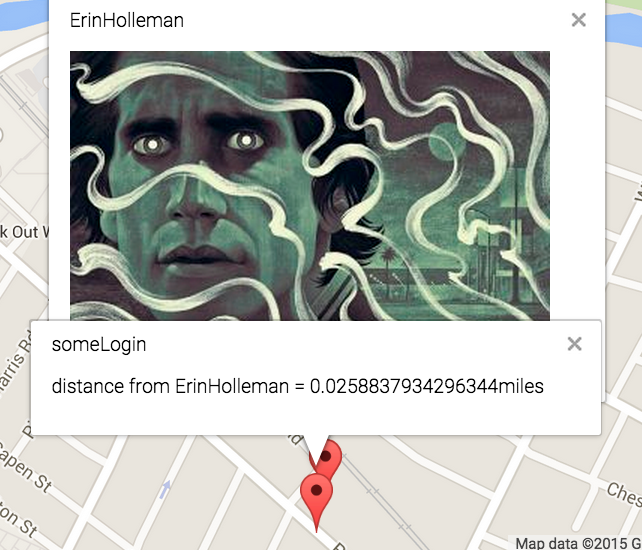
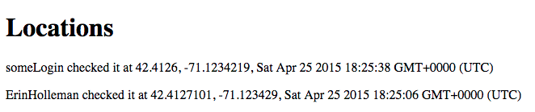
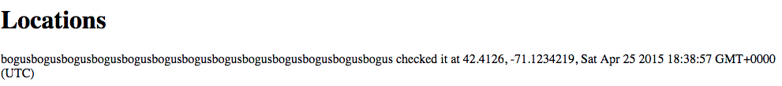

This report gives an assessment of the privacy and security vulnerabilities of the Marauder's Map client and server by Phillip Booth for Comp 20 assignment 4 in the Spring 2015 semester. The Marauder's Map client displays a map with pins and info windows with the last logged location of each user. The server provides the endpoints by which locations can be saved by user login and retrieved either for all users or a single user.
A vulnerability is classified as something that could be exploited to cause damage to the functionality of the application or a method by which someone could access or change data which is not theirs or they should not have permission to.
Testing was carried out first by black box testing the client-side and server-side, hosted on Github and Heroku respectively, at the urls provided. I used curl to make requests that would highlight vulnerabilities. I then scrutinized the source code for remaining vulnerabilities that could be exploited.
There were both security and privacy issues found. Security issues found were mostly due to too much faith in the input from the client. While some were very dangerous and could be a gateway for a malicious attack on the site and its users, some were simply inconveniences. Other privacy issues were due to the structure of the application and will require ne infrastructure to address.
/ on server-side and the client-sideLevel: High
At minimum, it causes great annoyance to users. However, this can also redirect users to malicious sites or have other malicious impact on users
There is no validation done on logins, which are allowed to be strings, and stored in the database and placed in html wholesale. Running curl --data "login=<script>alert()</script>&lat=0&lng=0" "http://sheltered-mesa-2531.herokuapp.com/sendLocation" inserts a script as a login.
ESAPI.encoder().encodeForHTML(request.body.login); or other encoders, found on the OWASP website instead of directly passing the login could help resolve this/ and location.json on server-side and the client-sideLevel: Moderate
Users locations are visible to anyone, with nothing to protect against people who users do not want to be able to see their locations
Anyone can see everyone else's location, which is a major privace issue.
 / and location.json on server-side and client-sideLevel: Low-Moderate
Users locations are accepted even for bogus user names, which can be input by executing a post request with curl inputting any string as the login parameter. This can include oversized names which cause inconvenience when viewing other users.
Level: Low
This does not cause errors; however, it affects the integrity of the database because of inconsistency of types that are expected to be numbers
Latitudes and longitudes submitted should be numbers. However, the method also allows submission of strings without error or attempting to make them numbers. Running curl --data "login=someLogin&lat=not&lng=number" "http://sheltered-mesa-2531.herokuapp.com/sendLocation" inserts "not" and "number" rather than some number into the database.
parseFloat(string).The most damaging vulnerability is cross-site scripting, which should be remedied immediately. While the issue with locations is not damaging to the functionality, it can also be easily fixed and so should also be done so quickly. The addition of a user authentication system, while requiring much additional infrastructure, would go a long way to fixing the large issue of privacy as well as false users. An additional assessment should be conducted after such a system has been implemented to check for any vulnerabilities in it or introduced through it.